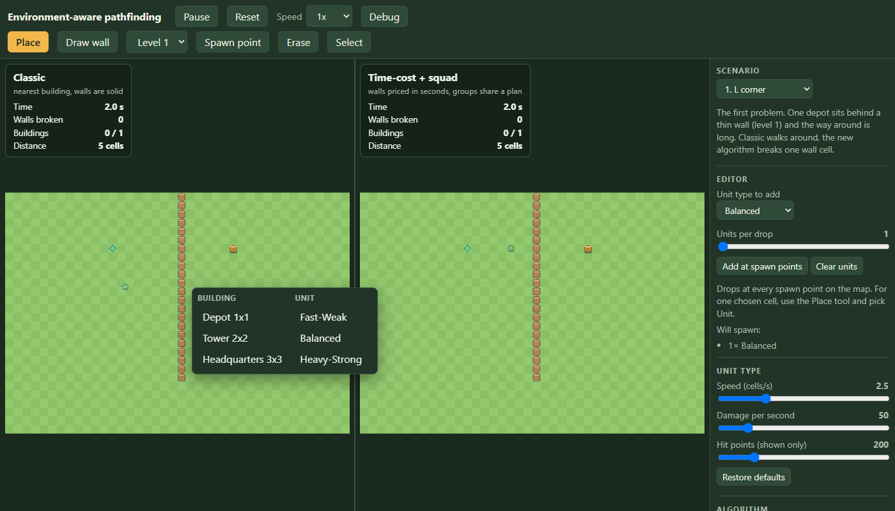
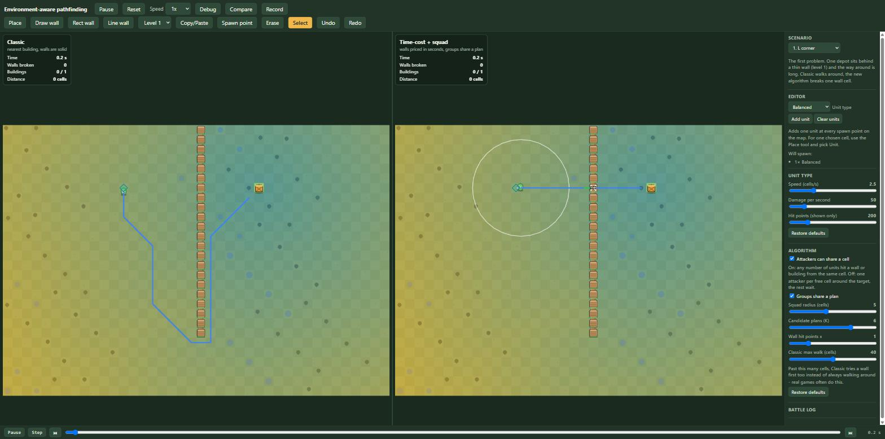

Pathfinding: deciding when to break a wall instead of walking around it
The unit that walked around a wall it could have broken.
In games where a crowd of units attacks a base, a familiar mistake: a wall stands between a unit and its target, a long way around exists, and the unit takes it, even though breaking one wall cell would be much faster. This project fixes that by pricing walls in seconds, so the planner can weigh breaking against walking.
The algorithm came first, in three stages: a baseline that reproduces the mistake, a planner that decides by time for one unit, and squads that share one plan and are limited by how many units fit around a wall. Then a two-panel PixiJS demo with an editor, nine maps and a debug view, which found a planner bug the tests had missed. The rest is what using it turned up: planner fixes, a speed target I have not met, and an editor that got smaller.
The setup
Two algorithms run side by side on the same map with the same units. The classic one picks the building closest in a straight line, treats walls as impassable, walks around if a path exists, and hits the nearest wall only when none does. Many games add a fixed limit (give up on paths longer than N cells), but that still does not compare breaking against walking, so it fires at the wrong moment.
The new one picks target and route by total time. An empty cell costs its length over the unit's speed. A wall cell adds its hit points over the unit's damage per second. One unit, seconds, so a strong unit and a weak one can decide differently about the same wall.
Stack: TypeScript, Vite, Vitest. src/sim has no DOM and no rendering, runs on a fixed 1/30 s step, and has no randomness, so the same scenario always gives the same result.
The baseline and the mistake
Walls come in five levels (100 to 2,000 hit points), buildings in 1x1, 2x2 and 3x3. A cell holds at most one attacker, and an event log makes two runs comparable exactly.
The test map is 15x20. An 18-cell level 1 wall splits it with a gap at the bottom, a depot (300 hit points) sits behind it, and one balanced unit (2.5 cells/s, 50 dps) starts 3 cells from the wall.
Filled cells are wall, the outlined cell on the right of each wall is the depot, the dot is where the unit starts. Both routes come from the simulation.
| plan | cells walked | walls broken | wall down at | depot down at |
|---|---|---|---|---|
| classic: walks around | 33.83 | 0 | never hit | 19.57 s |
| direct: breaks one cell | 4.00 | 1 | 2.87 s | 9.70 s |
The depot takes 6 s in both runs, so the whole gap is the trip: 13.6 s around against 3.7 s through. In stage 1 the direct route is hand-written and pushed in with forcePlan, only to prove a faster plan exists and the simulation can execute it.
Two rules are easy to get wrong. Movement is 8-directional, but a diagonal step is allowed only if both side cells are free, otherwise routes slip between two diagonal walls. And cell kinds are compared by name in exactly one file, a registry of what each kind does:
const REGISTRY: readonly EnvironmentKind[] = [
{ traversal: 'passable', moveCost: 1, targetable: false }, // empty
{ traversal: 'breakable', moveCost: 1, targetable: true }, // wall
{ traversal: 'blocked', moveCost: 1, targetable: true }, // building
]Everything else asks "passable, breakable or blocked", never "is this a wall". A test scans src/sim and fails if any other file compares against a cell kind; I added one such line to confirm the test goes red.
A wall is a cell with a price
The cost model is one function:
export function enterCost(grid: Grid, cell: number, stepLength: number, speed: number, dps: number): number {
const kind = grid.kind[cell]
const walk = (stepLength * moveCostOf(kind)) / speed
return traversalOf(kind) === 'breakable' ? walk + grid.hp[cell] / dps : walk
}Instead of a search per unit per building, the planner runs one Dijkstra backwards. It seeds the free cells around every living building with that building's destroy time, then floods outward. Every cell ends up with the seconds to finish its cheapest building, the next cell to step to, and which building the path ends at. Picking the building and the route is the same lookup, and wall cells are ordinary cells in the table, so a route can cross several walls in a row.
Flow field for a balanced unit, level 1 wall on the left and level 5 on the right. Grey cells are wall, the outlined cell is the depot. Only the route changes between the two panels.
The field is per unit type, because speed and damage are part of the price: the same wall costs 5 s to a fast unit and 0.67 s to a heavy one. Time to destroy the depot, classic / time-cost:
| wall level (hp) | fast (4 cells/s, 20 dps) | balanced (2.5, 50) | heavy (1.5, 150) |
|---|---|---|---|
| 1 (100) | 23.50 / 21.10 breaks | 19.57 / 9.70 breaks | 24.57 / 5.37 breaks |
| 2 (250) | 23.50 / 23.50 | 19.57 / 12.67 breaks | 24.57 / 6.37 breaks |
| 3 (500) | 23.50 / 23.50 | 19.57 / 17.70 breaks | 24.57 / 8.03 breaks |
| 4 (1000) | 23.50 / 23.50 | 19.57 / 19.57 | 24.57 / 11.37 breaks |
| 5 (2000) | 23.50 / 23.50 | 19.57 / 19.57 | 24.57 / 18.03 breaks |
The boundary moves with the unit. The heavy unit breaks even a 2,000 hp wall, because 13 s of hitting beats its 24.6 s detour. The balanced unit stops between level 3 and 4. The fast unit only breaks level 1. Where the planner walks, its time equals the classic time exactly, so it never made the walk worse.
Replanning without dithering
After every destruction, each walking or waiting unit asks the planner again; a unit already hitting finishes first. A new plan replaces the current one only if it is at least 10% faster than what remains, which stops units flipping between two near-equal routes. Tests pin both sides: 95.4% of the old time keeps the plan, 76.9% switches, and with the threshold at 0 the first test fails.
The real payoff: a heavy unit breaks a level 2 wall at 3.03 s. A fast unit that had planned the 28-cell detour sees the hole and walks through it. Both units finish both depots in 8.83 s against 24.50 s for classic on the same deploys.
A terrain the planner has never heard of
A test registers a mud kind that exists only in that file: passable, three times slower. No planner or simulation code knows about it. A 1-cell band is crossed (16.00 s predicted, 16.07 s real) and a 3-cell band is walked around.
Estimate and speed
For one unit alone, across three unit types and three wall levels, the worst estimate error is 1.0% against a 5% target. The estimate is always 0.03 to 0.10 s short, most likely from the fixed step at each walk/hit hand-over. One field takes 0.58 ms on 40x28 and 6.15 ms on 100x100 (targets 1 ms and 10 ms, Node 22, one machine).
A crowd is not a bigger unit
Six stage 2 units deployed together on a level 3 wall make six decisions and break two different wall cells: 8.53 s. One shared decision takes 6.97 s. Two things make a shared decision harder than multiplying damage: a wall can only be hit from the free cells next to it, one unit per cell, and units do not arrive together.
Attack positions
A unit whose position is taken now walks to the nearest free attack position of the same target, reserves it, and only waits when none is left. A small breadth-first search finds positions, and the planner uses the same function to count them, so simulation and forecast cannot disagree. The count depends on the approach side:
Left: a wall that runs across the map has three free cells on the near side. Right: the same wall inside a one-cell corridor has one.
With 3, 8 or 50 units on a fixed route, the corridor wall falls at 22.03 s and the wall across the map at 9.00 s. Fifty units are as slow as three. Hitting time is 20.03 s against 7.00 s, a ratio of 2.86 for three positions against one.
The one-attacker-per-position rule later became a switch in the demo, off by default, because many games let units stack. Every number in this section uses the rule; the demo section below has the numbers for both settings.
The break time under a crowd: units start hitting when they arrive, only the first ones to get a position count, and damage adds up between arrivals:
export function breakTime(hp: number, arrivals: ArrayLike<number>, dps: ArrayLike<number>, slots: number): number {
const hitters = Math.min(slots, arrivals.length)
let remaining = hp
let rate = 0
for (let i = 0; i < hitters; i++) {
if (arrivals[i] === Infinity) break
rate += dps[i]
const nextArrival = i + 1 < hitters ? arrivals[i + 1] : Infinity
const damageUntilNext = rate * (nextArrival - arrivals[i])
if (damageUntilNext >= remaining) return arrivals[i] + remaining / rate
remaining -= damageUntilNext
}
return Infinity
}Squads and six candidates
Units within 5 cells of each other, directly or through a chain, form a squad. Squads re-form at most five times a second. A squad decides in four steps:
- A flow field prices each wall by the damage the squad brings to it: its strongest units, as many as the wall has free positions.
- Up to 6 candidates: the best route, the full detour, the best route to each of the next two nearest buildings, and the best route with each of its walls banned in turn.
- A rollout scores each candidate without running the simulation: arrival times at each wall, positions to the first arrivals, break time, then the next stage starting after the previous wall falls.
- The lowest estimate wins if it is at least 10% faster than the current plan. Every member follows a field that may only break the chosen walls and ends on the leader's final cell.
Level 4 wall, balanced units deployed together, time until the depot falls:
| units | classic | squad planner | the squad |
|---|---|---|---|
| 1 | 19.57 s | 19.57 s | walks around |
| 2 | 16.63 s | 15.13 s | breaks the wall |
| 3 | 15.73 s | 10.97 s | breaks the wall |
| 4 | 15.27 s | 10.57 s | breaks the wall |
| 8 | 14.90 s | 10.17 s | breaks the wall |
One unit walks, two break. Past 3 units the gain is small, because the wall has 3 positions. Units still on their way count too: one unit at the wall plus ten 4 cells behind break it, 10.65 s predicted against 10.63 s real. A two-layer wall (thin outside, thick inside, one position inside) predicts 3.77 / 14.17 / 20.57 s per stage against a real 3.80 / 14.20 / 20.63 s.
The oracle
The test I trust most: 200 random 15x15 maps with random walls, one to three buildings, and a mixed group of one to nine units. Every candidate is forced through the real simulation and timed. Is the planner's pick within 5% of the best real candidate, and how far off is the estimate?
The first run was bad. Each fix below was found by looking at the maps it failed on:
| what I fixed | picks within 5% | mean estimate error |
|---|---|---|
| first version | 168 | infinite in some maps |
| score before the units move (the test was scoring after a unit already held a position) | 179 | 14.0% |
| units arriving together share the nearest positions, so later ones walk farther | 192 | 5.0% |
| count the positions of a wall cell that will be gone, not its far-side neighbors | 195 | 3.8% |
| count positions of later walls with the earlier ones already broken | 197 | 3.8% |
| only units that get a position count as hitters | 199 | 1.3% |
| every member ends on the leader's final cell | 200 | 1.2% |
| count attack positions on one side of a wall in the first price (found later by the narrow passage map) | 199 | 1.2% |
Two of these were real plan bugs, visible only because the estimate was so far off. Members followed their own paths down the field and spread over neighboring wall cells, each at full hit points (11.4 s against 7.7 s planned); a candidate now fixes the walls. And units deployed in one step were planned one by one, so the first, alone, chose the detour; now a step places everything first and plans after.
Since the fixes came from these 200 maps, 200 of 200 is not a fair number. Two fresh sets gave 199 and 198, mean error 1.2%. After the narrow-passage fix below the bound is "at least 198 of 200 within 5%, none more than 10% behind". One candidate, estimated 9.77 s and real 12.33 s, stayed unexplained for a while; its cause is further down. I also broke the rollout's "earlier walls count as gone" on purpose: only the oracle failed.
The suite is 52 tests at the end of stage 3, and every stage 1 and 2 number is unchanged.
Making it visible
One canvas, two panels: the classic algorithm on the left, the new one on the right, same map, same units, same deploy events. The drawing code only reads the worlds, and src/sim still imports nothing from Pixi.
The demo: the scenario is the one source, the session runs two worlds in lockstep, the views only read.
The simulation runs on a fixed 1/30 s step. An accumulator turns the browser's variable frame time into whole steps, a speed control (0.5x to 4x) scales it, and a long frame (a background tab) is capped at 0.25 s so it cannot become a burst of steps. The leftover becomes the alpha the view uses to blend each unit between its previous and current position:
advance(realSeconds: number): void {
if (!this.playing) return
this.accumulator += Math.min(realSeconds, MAX_FRAME_SECONDS) * this.speed
while (this.accumulator >= DT && !this.finished) {
for (const listener of this.beforeStep) listener()
this.classic.step()
this.fresh.step()
this.stepCount++
this.accumulator -= DT
}
if (this.finished) this.accumulator = 0
}The acceptance test is not a picture. The same scenario runs once with frames of exactly 1/60 s and once with a mix of 0.2, 0.013, 0.1 and 0.05 s, and every event and statistic of both worlds must match as text, also after Reset. Both pass. In headless Chrome, on the L-corner map (40x28, wall 22 cells long), the left panel walks around in 21.07 s, the right one breaks the wall in 13.33 s, and a banner says the new algorithm is 37% faster.

An editor and nine maps
The map is one Scenario object and both worlds are built from it. Every edit is a small pure function on it, with unit tests: paint a wall of level 1 to 5, erase, place a 1x1, 2x2 or 3x3 building where the whole footprint is free, add a spawn point, change the hit points of one wall or building. Any edit resets both worlds. Sliders cover unit speed, damage and hit points, squad radius, candidate count and a wall hit point multiplier, and a switch turns group behavior off.
export function paintWall(s: Scenario, x: number, y: number, level: WallLevel): boolean {
if (!inside(s, x, y) || marked(s, x, y)) return false
if (occupiedCells(s).get(`${x},${y}`)?.startsWith('building')) return false
// ...add a new wall, or change the level of the one there
}
A click drops the same units on the same cell at the same simulated time in both worlds, and the event goes into the scenario's deploy list so Reset replays it. The replay test caught an off-by-one-step bug: I stamped the event with the time of the steps already run, but a world lands a unit only on the next step, so live and replay differed by one step (0.2667 s against 0.2333 s). The event is now stamped (stepCount + 1) * DT.
The nine ready maps, time to destroy every building, from the smoke test that runs each map under both algorithms with one attacker per attack position (the rule used above):

The castle and the double layer were not first tries. My first castle, a level 2 ring, had the new algorithm 4.7% behind (21.60 s against 20.63 s). Both broke almost the same wall, and the gap was the greedy building order inside. The first double layer was 1.7% behind for the same reason. I redesigned both so there is a real choice: a strong ring with one weak gate, a strong inner ring with one weak door on the far side. That is what the algorithm is for, but it is also me building a map it wins on. The ties are in the table too: 5 is close, 7 has one unit, 9 forces both through the same barrier. On the crowd map the switch from walking around to breaking happens at 3 units, not 2 as on the test map, because the walk around is shorter relative to the wall; a test pins 1 and 2 walking, 3, 4 and 6 breaking.
The map that found a bug
The first narrow passage was open at both ends, so both algorithms walked around the outside and it looked like a tie. Closing the tunnel across the whole map made the new algorithm 23% slower: 46.93 s against 38.10 s. The estimate was fine (46.8 s predicted). The choice was bad: the debug view showed only two candidates, both through the tunnel's side walls, never through the barrier.

The cause was the first wall price. It counted free cells among all eight neighbors as attack positions. A level 5 side wall has three free cells inside and three outside, so it was priced for six attackers (6.7 s for 2,000 hit points) when only the three on the near side can reach it (13.3 s). The barrier cells were priced correctly at 10 s each, so the wrong walls looked cheaper and the barrier route was never generated. The fix counts only the best single side:
// Free cells on the best side of the cell (west, east, north or south line of three).
for (let d = -1; d <= 1; d++) {
west += free(x - 1, y + d)
east += free(x + 1, y + d)
north += free(x + d, y - 1)
south += free(x + d, y + 1)
}
return Math.max(west, east, north, south)Both algorithms now finish in 38.10 s and every other map kept its exact time. The oracle went from 200 of 200 picks within 5% to 199 of 200 (worst pick 1.052 instead of 1.021), and 199 on both fresh map sets. I relaxed its bound to "at least 198 of 200 within 5%, none more than 10% behind", which the measured numbers support. A correct rule with an honest bound beats a tighter number that only held because of the bug.
A switch: attackers inside each other
In most games of this kind units do not queue for a spot. They stand inside each other and all hit the wall. The one-attacker-per-cell rule had shaped everything since stage 1: attack positions, slot search, waiting, queues. It is now a switch, attackers can share a cell, on by default. In the simulation it is one flag on the world: a troop that reaches its target starts hitting from where it stands, with nothing reserved:
if (this.stackAttackers) {
troop.state = 'attacking' // no position is reserved, everyone hits from where they stand
return
}The planner needed two changes: the rollout adds each unit's damage from its arrival on, with no positions handed out, and the first wall price counts the whole squad's damage. A wall in a one-cell corridor fell in 22.03 s for 8 troops with the rule and falls in 4.53 s without it. The nine maps again:
| map | classic | new | difference | with one attacker per position |
|---|---|---|---|---|
| 1. L corner | 21.07 s | 13.33 s | 37% | 21.07 / 13.33 |
| 2. Castle | 42.90 s | 33.37 s | 22% | 43.30 / 34.50 |
| 3. Double layer | 28.67 s | 21.13 s | 26% | 63.60 / 30.47 |
| 4. Mixed levels | 31.43 s | 26.43 s | 16% | 46.90 / 29.17 |
| 5. No way in | 17.60 s | 16.50 s | 6% | 20.37 / 19.73 |
| 6. Maze | 47.13 s | 17.80 s | 62% | 47.33 / 20.13 |
| 7. Crowd effect (1 unit) | 21.07 s | 21.07 s | same | 21.07 / 21.07 |
| 8. Reinforcements | 16.17 s | 10.83 s | 33% | 17.00 / 14.63 |
| 9. Narrow passage | 13.40 s | 13.40 s | same | 38.10 / 38.10 |
The new algorithm still wins or ties everywhere, so the result does not depend on the rule. Its lead moves: the double layer drops from 52% to 26%, because classic's slow break through the strong ring is much faster with the whole crowd hitting; reinforcements grows from 14% to 33%, because late arrivals add damage the moment they arrive. The planner is also more accurate with the rule off, since there is nothing to guess about who stands where. The oracle in both settings:
| setting | maps within 5% of the best plan | worst pick | mean estimate error |
|---|---|---|---|
| one attacker per position, test maps | 199 of 200 | 1.052 | 1.2% |
| one attacker per position, two fresh sets | 199 and 199 | 1.146, 1.107 | 1.2%, 1.1% |
| cells shared, test maps | 200 of 200 | 1.000 | 0.8% |
| cells shared, two fresh sets | 200 and 200 | 1.000, 1.004 | 0.8%, 0.8% |
The older slot-rule tests now switch the rule off explicitly. New tests cover the default, the corridor wall (4.53 s against 22.03 s), no waiting or reserving, determinism, and the demo switch rebuilding both worlds. The suite is 123 tests.
Cartoon style and a debug view
Everything is drawn in code, no image files: wall posts that join their neighbors, five wall levels (wood, stone, iron, gold, obsidian), cracks at 75%, 50% and 25% hit points, three round characters that hop, squash and lunge. Hits throw sparks and falling walls throw dust. Particles live in a fixed pool of typed arrays capped at 360, with their own random generator, so decoration cannot touch the simulation.
The debug view follows the first active unit (or a clicked one) and shows, with no extra clicking:
- A heat map of the flow field for that unit type, in seconds to finish.
- Its route: blue where it walks, green where it breaks, an X on the wall.
- Rings around units that share a plan, and the squad radius around the followed one.
- Wall hit point bars, and a table of walls per level.
- The squad's candidates: goal, estimated time, walls, attack positions per stage, and the one in use.
- Best walk-around time against best break-through time, estimate against the real time, and the planning time of the last decision.

Two bugs on the way. The candidate list showed "never" for a group already hitting, because asking the planner while units hold the positions answers a different question (the same effect as in the oracle). A group that has started hitting now shows that it keeps its plan. And the heat map (a thousand squares) was repainted every frame; it now repaints only when the field changes, at most twice a second. Candidates come from a private planner per panel, so asking never disturbs the one that runs the world.
Frame time
The goal was close to 60 fps with 30 units in both panels. Measured in headless Chrome with software WebGL, 1400x800:
| version | time per frame | frames per second | JavaScript in the frame |
|---|---|---|---|
| stage 4, plain shapes | 21.3 ms | 47 | not measured |
| stage 6, cartoon style, debug off | 19.5 ms | 51 | 0.6 ms |
| stage 6, debug on | 26.1 ms | 38 | 0.9 ms |
My code (simulation steps and draw calls) is under 1 ms. The rest is the software rasterizer filling pixels. A real GPU should do much better, but I did not measure one, so I cannot claim 60 fps. Walls redraw only when one falls, and cracks only for hurt walls.
Publishing
The build uses relative asset paths so it works from any sub-path. A GitHub Actions workflow runs npm ci, the tests and the build on every push to main and publishes to Pages; a failing test stops the publish. The production build is checked locally in Chrome, including a 700 px window where nothing overflows sideways.

A bug inside the oracle's tolerance
The oracle runs every candidate plan from 200 random maps through the real simulation and compares the result with the planner's estimate. Seed 10069 was estimated at 9.77 s but took 12.33 s. A 24% miss is still inside the oracle's tolerance, so no test failed, but it is too big to be noise.
I stepped the simulation tick by tick for that seed: four troops, one wall, one tower behind it. The wall broke on time (2.20 s real, 2.17 s estimated). The tower did not. Troops 2 and 3 were expected there by about 6 s, but they arrived at 10.20 s and 10.43 s.
Within a stage, the rollout was already correct. A troop that loses the nearest attack position is bumped to a farther one, and its extra walk is added. The bug was between stages. That later arrival fed only the current stage's break time and was then dropped. The next stage's walk started from the original arrival, as if the bumped troops had teleported back to the fast path.
The fix: stageTime() now also returns a ready array, one time per member by original index, and the next stage starts from it:
const ready = arrivals.slice()
const hitters = order.slice(0, slots).map((i, rank) => {
const arrival = arrivals[i] + this.slots.foundDepth[rank] / members[i].type.speed
ready[i] = arrival // the next stage walks from here
return { arrival, dps: members[i].type.dps }
})
// caller:
arrivals = result.readySeed 10069's two candidates now estimate 10.73 s and 11.87 s against real times of 10.77 s and 12.33 s, both within 4%. The planner now picks the walk-around route, which the bad estimate had hidden. Across the 200 maps, plus two fresh sets not used while writing the fix:
| setting | within 5% | worst pick | mean estimate error |
|---|---|---|---|
| one attacker per position, before | 199 of 200 | 1.052 | 1.2% |
| one attacker per position, after the arrival fix | 199 of 200 | 1.052 | 1.0% |
| attackers may stack, before | 200 of 200 | 1.000 | 0.8% |
| attackers may stack, after the arrival fix | 200 of 200 | 1.000 | 0.7% |
Mean error dropped in both settings. The worst pick only moved with the next fix. The lesson: a bug can sit inside a test's tolerance, so no test turns red. Only asking why the estimate missed found it.
The slowest one sets the pace
A squad's route field was priced at the squad's mean speed. That assumes the group moves at its average, but a mixed group moves at its slowest member's pace:
const speed = Math.min(...members.map((t) => t.type.speed))Positions mode: 199/200 up to 200/200 within 5%, and the worst pick dropped from 1.052 to 1.021. Stacking mode did not change. The nine named scenarios did not change either, because none of them mix speeds within one squad. Only the random-map oracle covered this path.
Planning speed
The target was one full planning round for 10 squads and 50 units on 40x28 in under 3 ms. A round (every squad decides again, the cost of one destroyed wall) took 56.7 ms at first, and 25.0 ms once searches stop as soon as the cells they were asked about are final. That is 2.4 ms per squad and 8x over target. A squad needs up to seven fields and six rollouts. A field cache and replanning only affected squads would come first.
Work nobody read
A squad decision tries up to six candidate routes. evaluate() scores each one with a rollout, then calls plansFor() on every candidate to build a per-member walking plan, which costs one more full flow field per candidate. Only the winner's plan is ever used. The debug table reads just total and stageSlots. So about half the fields computed per decision were thrown away.
The fix: plans becomes a lazy getter. The winner's plan is still built right after the sort, so a caller that reads it later gets the plan as it was at decision time:
return Object.defineProperty(entry, 'plans', {
enumerable: true,
get: () => (plans ??= this.plansFor(entry, members, strength)),
}) as Evaluated
// ...
scored.sort((a, b) => a.total - b.total)
void scored[0]?.plans // eager for the winner23.8 ms down to 21.0 ms on the same benchmark (10 squads, 50 troops, 40x28 map). The 3 ms target is still far off. This fix only removes wasted work. The costly parts are untouched: each squad recomputes its field on every event with no cache, and searches its candidates from scratch.
A field cache
The next idea on the list for the remaining 7x gap to the 3 ms target was a field cache keyed by squad strength and map version. I built it: strengthOf() caches per unique combination of stacking and per-member speed/dps, and a squad's flow field is cached by start cell, break spec and strength signature -
private fieldKey(spec: Spec, strengthSignature: string, start: number): string {
const breaks = [...spec.allowedBreaks].sort((a, b) => a - b).join(',')
const banned = [...spec.bannedCells].sort((a, b) => a - b).join(',')
return `${start}|${spec.onlyBuilding}|${spec.noBreaks}|${breaks}|${banned}|${strengthSignature}`
}- both cleared on every map-version change, since a destroyed wall changes the grid a cached field was computed against. Caching is restricted to the single-start-cell case: the flow field's settle parameter early-exits once its target cells are finalized, so a field cached while settling for one target is not provably complete for a different one, and the only call shape safe to reuse is the one where there is exactly one start cell and no early exit.
21.71 ms against 21.22 ms - within noise, not the win I was hoping for. The reason is that a squad's own decision was already cached, keyed by leader id, cleared on the same version change: nothing inside one version was ever recomputed for the same squad twice. What the field cache actually buys is narrower than "cache the computation" suggested - cross-squad reuse, when two different squads share a start cell and a composition inside the same version. Worth having, not worth overselling.
A walk limit for the classic AI
Classic never had a reason to give up on walking. However long the way around a wall was, it took it, because nothing in the planner ever compared that distance to anything. Real games are not this patient - past some distance a unit gives up on the detour and just breaks in, same as it already did when there was no path at all. The fix is a maxWalk the classic planner checks before committing to the walk:
plan(world: World, troopId: number): Plan | null {
const troop = world.troops[troopId]
this.search.run(this.grid.cellOfPoint(troop.x, troop.y))
const nearest = this.nearestBuilding(world, troop, false)
if (nearest === null) return null
const slot = this.bestSlot(world, troop.id, 'building', nearest.id)
const walkOk = slot >= 0 && this.search.dist[slot] <= this.maxWalk
return (
(walkOk ? this.planTarget(world, troop, 'building', nearest.id) : null) ??
this.planBreakthrough(world, troop, nearest) ??
this.planTarget(world, troop, 'building', nearest.id) ?? // too far, but no wall worth breaking either: walk anyway
this.planNearestReachable(world, troop)
)
}The number I picked first was 30 cells, and the test suite caught the problem with it before I'd looked at a single map by eye: the scenario the whole demo opens on, "L corner", exists specifically to show classic taking a long way around a thin wall - and its own walk-around distance turned out to be about 34 cells. A 30-cell default meant classic started breaking that same wall too, on the flagship scenario, on load, collapsing the exact contrast the scenario's own description promises. "Crowd effect", the other scenario built around a long detour, was even closer to the edge at 37.6 cells. I moved the default to 40, comfortably past both:
The cap itself lives in one constant, used both as the sidebar slider's default and the fallback when a scenario doesn't set its own:
export const CLASSIC_MAX_WALK = 40 // default scenario.classicMaxWalk: past this many cells, Classic tries a wall first tooEvery built-in scenario still opens with classic walking, as described above; a custom map built in the editor now gets a real cap instead of infinite patience, and the sidebar's "Classic max walk" slider lets anyone lower it and watch the wall break sooner.
Editor changes from real use
Picking a wall level, building or unit meant a trip to the side panel before every click. So four tools became one Place tool: click a cell and a three-column popup (wall, building, unit) asks what goes there.

It broke drag-painting walls. A menu that opens on every click cannot also support a drag. The first report back was "i cant place bulk wall." Walls are painted in strokes, while buildings and units are placed one at a time. So walls went back to their own Draw wall tool, with a level <select> beside it. The whole toolbar also moved from the side panel to its own row in the top bar.
Unlabeled unit controls. The "drop units" section had a dropdown with no label, "Drop at spawns" and "Clear units". It now has a "Unit type to add" label, an "Add at spawn points" button with a one-line hint, and a "Will spawn:" list grouped by type.
Mid-run spawn time. A unit added mid-run was stamped with the time it was added, so a reset replayed it at that moment. That was correct as built, but it was not what we wanted. Added units should be part of the opening wave. They are now stamped at t: 0. The unit still appears at once, because t=0 is already in the past, and a reset spawns it with everything else:
const event = { t: 0, troopType, x, y }
this.scenario.deployments.push(event)
this.classic.addDeployment(event)
this.fresh.addDeployment(event)One test had asserted the old behavior. It now checks that a mid-run add gets spawnTime === 0, and that a reset still replays deterministically at any frame rate.
Debug drawing on both panels. The heat map first drew only on the panel that held the selection. Both worlds are built from the same deployments in the same order, so a troop id means the same unit in both, and the heat map now draws on both panels, each against its own walls. At first the route line stayed on the selected panel, on the idea that the other copy of the unit may move differently. But each panel draws the route from its own world's current plan, not from a copy, so there was nothing to protect against, and both panels now show the followed unit's route.

The timeline's scrub bar sat at the bottom with a step button and jump-to-event arrows, but pausing meant reaching back up to the top bar. It now has its own play/pause button right next to the scrub bar, reading and toggling the same state the top-bar one does - scrubbing back through a run and pausing it are in the same place now.
The rest is subtraction. The sidebar's "new unit type" and "new building type" forms - name, speed, dps, hp inputs, a button - came out entirely: three unit types and three building types cover every scenario here, and a form for a fourth was never load-bearing. "Units per drop" lost its slider too; "Add at spawn points" is now "Add unit" and always adds exactly one, so getting to three units for the crowd-effect scenario is three clicks instead of a slider drag.
Open issues
- Building order inside a target area is greedy: behind thick walls the cheapest-first pick wins the first building but loses the total, 68.20 s against 65.83 s for classic.
- A full planning round for ten squads takes about 21 ms against a 3 ms goal. Replanning only the squads a change affects, or a worker, are the next ideas.
- Attack positions for walls in a row treat earlier walls as gone and cannot know what other squads will occupy.
- Frame time was measured with software WebGL only, so 60 fps on a real GPU is likely but not shown.